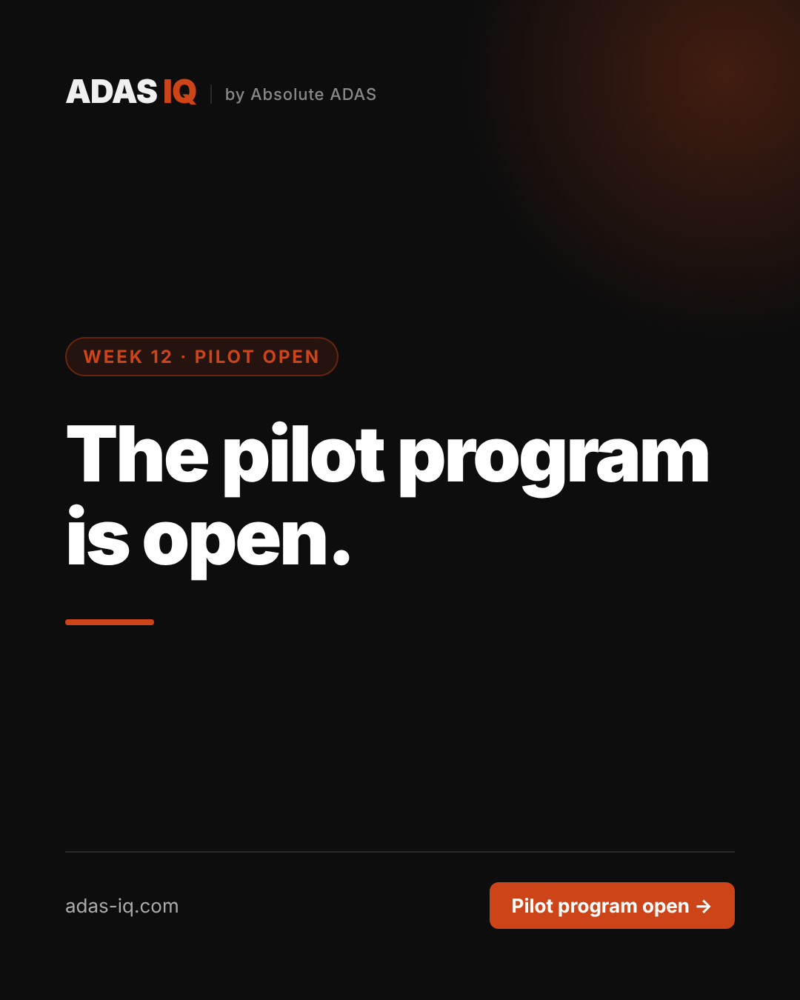

The pilot program is open.
We're opening ADAS IQ to a small group of independent mobile ADAS operators.
No credit card. No commitment. No automated sales sequence. Tell us your biggest operational headache and we'll follow up personally.